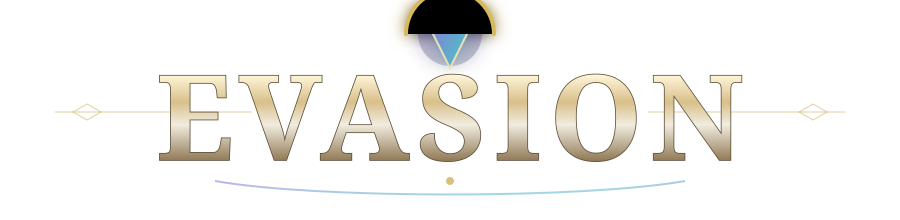

Shared population
Cross-faction grouping, trading, communication, travel and ordinary interaction are supported.

Private AlphaWorld of Warcraft 3.3.5a · custom server · private alpha
A custom open-world MMORPG experience combining World of Warcraft combat with Lineage II-inspired PvP, Karma, clan warfare, shared dungeons, meaningful progression, and valuable loot.
Server vision
Evasion is designed around persistent places, recognizable enemies, guild rivalries, contested farming and long-term consequences. Alliance and Horde share the same social world, while PvP status communicates intent and risk.
Cross-faction grouping, trading, communication, travel and ordinary interaction are supported.
White, Purple and Red states make the difference between neutrality, active PvP and Karma visible at a glance.
Normal dungeons become persistent farming spaces where groups can meet, compete, cooperate or fight.
Permanent Clan Wars, guild levels and shared passive skills turn guild membership into progression and politics.
Feature overview
Neutral players are White. Hold Ctrl to deliberately attack a neutral player and become Purple. Purple players can be attacked freely.
Killing an innocent player adds Karma and turns the killer Red. Higher lifetime PK totals increase the amount of equipment and inventory at risk on death.
Guild leaders declare wars that require mutual acceptance. Wars persist until both sides agree to peace and award separate clan-war points.
All 51 populated normal non-raid dungeon maps are included in the shared-dungeon rollout. Raids remain separate from this system.
The individual, party or raid dealing the most total damage receives initial loot rights. Party and raid damage is combined.
Guild experience, levels and skill points unlock a branching talent tree with Might, Warding and Restoration specializations.
Normal PvE and PvP deaths create experience debt. Earned experience pays debt before advancing normal progression.
Dungeon herbs and ore use persistent depletion cooldowns and shared spawn pools, with randomized 15–30 minute respawns.
Karma lifecycle
The system separates neutral players, active combatants and player killers without blocking ordinary social interaction.
You are not actively involved in open-world PvP.
Attacking another player flags the aggressor Purple.
Killing an innocent player grants Karma and turns the killer Red.
Karma decreases through legitimate monster progression. Monster experience still reduces Karma while paying experience debt.
Dropped items appear inside a public sparkling grave. Multiple players can inspect it and compete to loot the contents.
Stackable items can lose a random percentage of their stack, with dropped and looted items reported in chat.
Clan warfare
Guild leaders can declare war on other guilds. A declaration must be accepted, and a guild may participate in multiple wars simultaneously. Peace also requires both sides to agree.
Shared dungeons
Solo players, parties and raids enter the same supported normal dungeon population. There are no personal dungeon resets.
All populated normal non-raid dungeon maps are included in the rollout.
Bosses generally use long randomized respawns. Ordinary enemies use shorter randomized timers.
Certain event bosses use rare summoning items with a five-second uninterrupted cast in the correct chamber.
First-tag ownership is removed from ordinary monsters. Highest total damage by an individual, party or raid receives initial loot rights, which later become public.
Dungeon gold is moderately increased while equipment remains uncommon. Higher-level equipment stays rarer so crafting and boss rewards retain value.
Herbs and ore use shared pools and depletion cooldowns. Leaving and returning does not reset a node.
Doors, progression blockers and event encounters are adapted for the shared-world model, but individual encounters still require continued testing.
Guild progression
Guild experience is separate from spendable skill points. Members contribute through progression and PvE activities, while clan-war points remain a separate competitive resource.
Screenshot gallery
These are placeholders only. No fake gameplay screenshots are being presented.
Development progress
Roadmap
Private alpha notice
The project is currently in private alpha development. Systems listed as implemented or playable are still subject to testing, balancing, iteration and bug fixing. No public release date is being promised.
FAQ
Core PvP, Karma, Clan Wars and PK-drop systems are in playable alpha states, but Evasion is still a private alpha project rather than a public release.
Players are normally neutral with White names. Hold Ctrl to deliberately attack a neutral player; doing so flags the aggressor Purple.
You gain Karma and become Red. Repeated PK activity increases consequences, including the amount of inventory or equipped gear at risk when you die.
Yes. Red players remain socially functional and can trade, join parties and interact normally, although guards enforce PvP rules around settlements.
Party and raid members are protected from friendly fire.
A guild leader declares war, the other side must accept, and the war continues until both sides agree to peace. War kills do not grant Karma or lifetime PK points.
Supported normal dungeons use a shared-world model instead of private party copies. Raids remain separate from this rollout.
The individual, party or raid dealing the most total damage earns the initial loot rights. Loot becomes public after the protected period.
Yes. Red players can drop inventory items and equipped gear, with greater lifetime PK totals increasing the number of items at risk.
Normal PvE and PvP deaths can create debt. Earned experience pays off that debt before advancing normal experience. Duels do not cause experience loss and Clan War deaths use a reduced penalty.
No. Evasion is currently in private alpha testing.